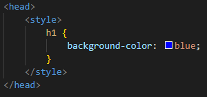
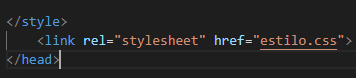
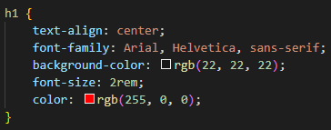
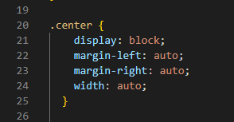

6. O que é CSS e para que serve?
O CSS se encarrega de toda a parte de apresentação do site, atrativa para o usuário. A possibilidade de personalização é praticamente infinita com diversas possibilidades de estilização em uma página HTML.
7. Quais são as formas para declarar CSS? Exemplifique.
Uma forma de inserir CSS é utilizar a tag style dentro do head da página HTML:

Outra forma porém a mais utilizada de aplicar CSS é criar um ou mais arquivos com extensão .css e incluí-los na estrutura head do HTML:

8. Qual é a sintaxe do CSS?
Na sintaxe de uma regra CSS, escreve-se o seletor e a seguir a propriedade e valor separados por dois pontos e entre chaves { }. Quando mais de uma propriedade for definida na regra, deve-se usar ponto-e-vírgula para separá-las.
9. Cite e exemplifique 5 aplicações com CSS.
No caso da imagem abaixo, foram utilizadas as seguintes propriedades:

text-align: força o texto a ficar no meio da página.
font-family: muda a fonte do texto.
background-color: permite mudar a cor de fundo.
font-size: permite mudar o tamanho do texto.
color: muda a cor do texto.
10. Cite um exemplo de como podemos posicionar um elemento com CSS.
Podemos alterar e também forçar a posição de elementos utilizando as regras "Margin e "Padding".
11. Explique e exemplifique o que é margin e padding.

No caso da imagem acima foram utilizadas regras de CSS para que ela ficasse na posição central da página.